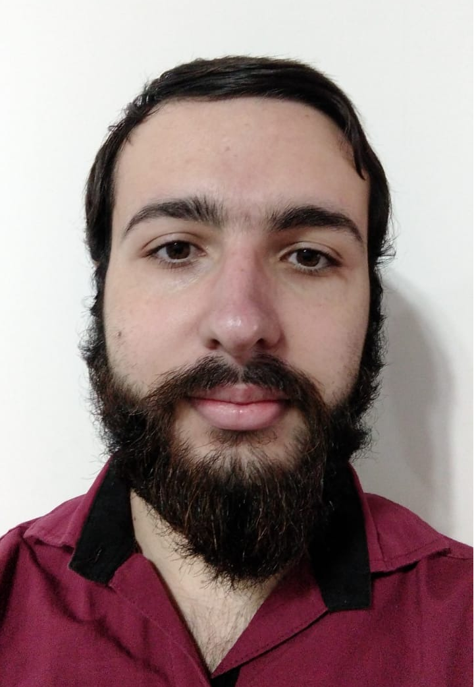

Alejandro Angel Gazzola
Informacion personal:

- Estado civil: Soltero.
- Nacionalidad: Argentina.
- Fecha de Nacimiento: 26 de Junio de 1999.
- DNI.: 42.001.107.
- CUIL.: 20-42001107-6.
- Dirección: Túnez 1856 PA- Banfield, Lomas de Zamora, Bs.As.
- Tel. celular: 115998-5338.
- E-mail: alegazzola.racingclub@gmail.com.
- Disponibilidad Horaria: Full-Time.
Perfil:
Joven estudiante de programación, con ganas de labrarse un futuro en esta carrera, buena presencia.
Capacidad de integración, Flexibilidad, Dinamismo, tenacidad, empuje y ganas de prosperar.
Educacion:
- Estudiosrealizados: Graduado en Comunicación en E.E.S. Nº3 de la localidad de Glew,
Pdo. Almirante Brown. Egresado en 12/2019.
- Estudios en curso: Tecnicatura en programación, primer año en Universidad Nacional
Guillermo Brown. Comienzo 04/2022
Conocimientos:
- Manejo Intermedio de Word, Excel, PowerPoint e Internet.
- Curso de HTML y CSS ( https://www.aulaclic.es/html/index.htm) desde 04/2020 al 05/2020
- Conocimientos básicos en HTML, CSS y Java Script ( tutorialesprogramacionya.com) 06/2020 al 08/2020
- Curso de Argentina Programa (Módulos completos: Sé Programar desde el 10/2021 al 12/2021 y parte de Yo Programo desde 02/2022 al 05/2022)
- Manejo de Mails y Aplicaciones de Mensajería y Correos.
Objetivos:
Poder ampliar mis conocimientos y crecer en el ámbito laboral.
Experiencia Laboral:
- Grupo Emetres SRL, Fray Mamerto Esquiu 1345, Lanus B1820, Bs As. Tel: 42259506 / 42258830
int.11 (Contacto Maricel Vicente +54 9 11 6092-5375) Área Administrativa y soporte informático
(desde el 01/12/2018 hasta el 31/05/2021).
- Tareas: Administrativas en general y soporte informático, mantenimiento y mejora de sistemas
existentes de stock, depósitos virtuales para plataformas de E-commerce, integración y desarrollo
de distintas herramientas informáticas, para poder afrontar la virtualidad de las operaciones,
provocado por la pandemia de CIVID19.
- Soluciones de Archivos S.A., Camino Gral. Belgrano 10500 "Parque Industrial Tecnológico Quilmes",
Quilmes Tel: 5274-2228. Área de Digitalización (trabajo temporario desde el 01/01/2022 hasta el
31/03/2022, suplencia por vacaciones).
- Tareas: Atención de llamadas, organización y distribución de correo interno, Verificación de ingreso
de información en distintas plataformas (Transmisión de archivos digitalizados, para procesar y
resguardar).